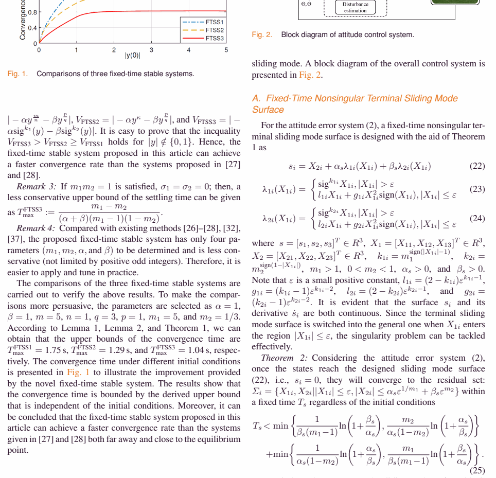

| Title | Robust fixed-time sliding mode attitude control of tilt trirotor UAV in helicopter mode |
| Authors | Li Yu, Guang He, Xiangke Wang (Senior Member, IEEE), Shulong Zhao |
| Affiliation | 国防科技大学 智能科学学院（College of Intelligence Science and Technology, National University of Defense Technology, Changsha 410073, China） |
| Venue | IEEE Transactions on Industrial Electronics，Vol. 69, No. 10, pp. 10322–10331, October 2022（Published online: 2021） |
| DOI | 10.1109/TIE.2021.3118556 |
| Funding | Supported by the National Natural Science Foundation of China (Grant Nos. 61973309, 61801494) |
| TL;DR | 针对倾转三旋翼无人机在直升机模式下的姿态镇定问题，提出了一套完整的固定时间（fixed-time）滑模控制方案。核心包含四个递进式贡献：（1）提出一种新型固定时间稳定系统，收敛速度显著快于已有的三类经典固定时间系统；（2）基于该新型系统设计固定时间滑模面；（3）综合自适应扰动估计的固定时间控制律；（4）设计连续快速固定时间控制律以消除抖振。与 NFTSMC [27] 和 AFNTSMC [28] 进行了仿真和飞行实验对比，在收敛速度、稳态精度和抗扰能力三个维度上全面超越。倾转三旋翼 UAV 兼具固定翼（长航时、高机动）和直升机（灵活起降）的优势，但其在直升机模式下的不稳定结构对姿态控制提出了极高的收敛速度要求。 |
论文采用经典的"问题建模 → 理论工具 → 方法设计 → 实验验证"四段式结构。共 6 个章节：
| 章节 | 标题 | 核心功能 | 篇幅 (页) |
|---|---|---|---|
| I | Introduction | 综述倾转旋翼UAV控制现状 → 指出有限/固定时间控制的差距 → 列出四项贡献 | 1.5 |
| II | Preliminaries and Problem Formulation | 建立倾转三旋翼UAV的姿态误差动力学模型 → 给出固定时间稳定的数学定义和引理 | 1.5 |
| III | Novel Fixed-Time Stable System | 提出 NFTSS → 与三类已有 FTSS 进行收敛速度的数学对比 → Theorem 1 证明 | 2.0 |
| IV | Fixed-Time Control Design | 滑模面设计（Theorem 2）→ 控制律设计（Theorem 3）→ 连续控制律 + 自适应估计 | 3.0 |
| V | Simulation and Flight Experiment | 仿真对比（NFTSMC + AFNTSMC）→ 飞行实验验证 → 多组初始条件 + 扰动测试 | 2.5 |
| VI | Conclusion | 总结贡献 → 指出未来方向（偏航轴控制精度、多模式切换） | 0.5 |
flowchart TD
subgraph FOUNDATION["理论基础层 Section II"]
MODEL["倾转三旋翼姿态误差动力学
J(Θ)Θ̈ + C(Θ,Θ̇)Θ̇ = Γ + D
D = 参数不确定性 + 外部扰动"]
LEMMA["Lemma 1-4: 固定时间稳定性判据
V̇ ≤ -αV^p - βV^q → 固定时间收敛"]
end
subgraph CORE["核心理论层 Section III"]
NFTSS["Novelty 1: 新型固定时间稳定系统 NFTSS
Ẋ₂ = -α·sig^{k1}(X₁) - β·sig^{k2}(X₁)
k1>1, 0
s = X₂ + α_sλ₁(X₁) + β_sλ₂(X₁)
终端滑模 ↔ 线性滑模 自动切换"]
CONTROL["Novelty 3: 固定时间控制律
Γ = J₀(Θ̈ᵣ+C₀Θ̇+α_sλ̇₁+β_sλ̇₂)
+ α_r·sig^{k₃}(s) + β_r·sig^{k₄}(s) + D_z + η"]
ADAPTIVE["自适应扰动估计
Ḋ_z = -∂η/∂X₁·X₂ - ∂η/∂X₂·J₀⁻¹(...)
η = -η₁E - η₂X₂, E = X₁∘X₁∘X₂"]
THM2_THM3["Theorem 2: 滑模面到达的固定时间
Theorem 3: 控制器的固定时间收敛"]
end
subgraph IMPLEMENT["工程实现层"]
CONTINUOUS["Novelty 4: 连续控制律
sig^k(s) 替代 sgn(s) → 消除抖振"]
SIM["仿真验证: NFTSMC [27] vs AFNTSMC [28]
三种初始条件 + 时变扰动"]
FLIGHT["飞行实验: 倾转三旋翼实物平台
悬停姿态镇定 + 阶跃响应"]
end
MODEL --> NFTSS
LEMMA --> THM1
NFTSS --> COMPARE
NFTSS --> SURFACE
THM1 --> THM2_THM3
SURFACE --> CONTROL
CONTROL --> ADAPTIVE
ADAPTIVE --> THM2_THM3
THM2_THM3 --> CONTINUOUS
CONTINUOUS --> SIM
SIM --> FLIGHT
classDef found fill:#e8f0fe,stroke:#3b82f6,stroke-width:2px,color:#1d4ed8
classDef core fill:#f0ebfd,stroke:#8b5cf6,stroke-width:2px,color:#6d28d9
classDef design fill:#fef7ed,stroke:#f59e0b,stroke-width:2px,color:#92400e
classDef impl fill:#e6f7ee,stroke:#10b981,stroke-width:2px,color:#047857
class MODEL,LEMMA found
class NFTSS,COMPARE,THM1 core
class SURFACE,CONTROL,ADAPTIVE,THM2_THM3 design
class CONTINUOUS,SIM,FLIGHT impl
推荐阅读路径：Section II（理解模型和数学工具） → Section III 的 Theorem 1 陈述（理解 NFTSS 收敛特性，跳过冗长证明） → Section IV 的滑模面和控制律公式（理解方法设计，Theorem 2/3 证明留待精读时消化） → Section V 的仿真/实验对比图（验证性能） → 回头看 Theorem 2/3 证明（理解收敛时间上界的推导）。这种"模型 → 公式 → 结果 → 证明"的阅读顺序有助于在投入大量时间消化证明细节之前，先建立对方法有效性的直观判断。
| 类别 | 内容 | 说明 |
|---|---|---|
| 输入 — 姿态角 | $\Theta = [\phi, \theta, \psi]^T$（滚转、俯仰、偏航） | 由机载 IMU 的 AHRS/ EKF 解算得到 |
| 输入 — 角速率 | $\dot{\Theta} = [\dot{\phi}, \dot{\theta}, \dot{\psi}]^T$ | 陀螺仪直接测量或数值微分 |
| 输出 — 控制力矩 | $\Gamma = [\Gamma_\phi, \Gamma_\theta, \Gamma_\psi]^T$ | 期望的三轴力矩，经控制分配转化为三个旋翼的转速/推力指令 |
| 目标 1 — 姿态镇定 | 从任意初始姿态 $(\Theta_0, \dot{\Theta}_0)$ 收敛至悬停状态 $(\Theta_d, 0)$ | 收敛时间上界与 $\Theta_0$ 无关 |
| 目标 2 — 抗扰鲁棒性 | 存在参数不确定性（$J \neq J_0$）和外部扰动（$d_{\text{ext}} \neq 0$）时仍保证有界收敛 | 通过自适应扰动估计实现，无需扰动上界 |
| 验证 — 仿真 | 三组初始条件 + 时变外部扰动 + 20% 参数不确定性，对比 NFTSMC [27] 和 AFNTSMC [28] | 评估收敛速度、稳态精度、控制能耗 |
| 验证 — 飞行实验 | 倾转三旋翼 UAV 实物平台的悬停镇定 + 阶跃响应测试 | 验证在真实气动环境中的控制器性能 |
这是一个典型的非线性鲁棒控制问题，具体属于固定时间滑模控制（Fixed-Time Sliding Mode Control）子领域。与有限时间控制（Finite-Time Control）的关键区别：有限时间控制的收敛时间上界依赖于系统初始状态——$T_{\max} = f(\Theta(0), \dot{\Theta}(0))$，当初值远离平衡点时收敛时间可能任意长。固定时间控制的收敛时间上界是控制增益的显式函数——$T_{\max} = f(\alpha, \beta, k_1, k_2)$，与初始状态无关。这对倾转三旋翼 UAV 至关重要：直升机模式下机体本质不稳定（类似于倒立摆），初始姿态偏差的不确定性要求姿态控制器具备"最坏情况下的收敛时间保证"。
| 已有方法 | 核心思路 | 为什么不够 |
|---|---|---|
| PID / 线性 SMC [9]（经典方法） | 在平衡点附近线性化 → 线性控制器（PID, LQR）→ 通过高增益压缩稳态误差 | （1）仅保证渐近稳定——理论收敛时间无穷；（2）线性化仅在平衡点小邻域内有效——大初始误差下性能退化甚至不稳定；（3）对参数变化的鲁棒性依赖高增益——增益过高会激发未建模高频动态（结构共振） |
| 终端滑模 TSMC / NTSMC [15,16]（有限时间） | 终端滑模面（$s = \dot{x} + \beta x^{q/p}$）使系统在滑模面上有限时间收敛；非奇异终端滑模（NTSMC）解决了终端滑模在 $x=0$ 附近的控制奇异性 | （1）收敛时间 $T$ 是初始状态 $x(0)$ 的函数——$x(0)$ 越大，$T$ 越大；（2）倾转三旋翼在模式切换或阵风扰动后 $x(0)$ 可能很大且不可预测——需要"最坏情况收敛时间保证"；（3）仍需扰动上界先验知识来设计切换增益 |
| NFTSMC [27]（固定时间对比方法 1） | 非奇异固定时间终端滑模——基于经典固定时间稳定系统 $\dot{x} = -k_1 x^{m_1/n_1} - k_2 x^{p_1/q_1}$ 设计滑模面和控制律 | （1）基础稳定系统的收敛速度非最优——过渡区域的"合力洼地"未被消除；（2）滑模面从终端到线性的切换策略未优化；（3）扰动补偿依赖于预设的固定切换增益——无自适应机制 |
| AFNTSMC [28]（固定时间对比方法 2） | 自适应快速非奇异终端滑模——在 NFTSMC 基础上加入自适应增益调整 | （1）自适应律仅调整增益幅值，不改变基础系统的收敛结构——因此收敛速度的瓶颈仍未被突破；（2）自适应更新律可能产生参数漂移（parameter drift）——扰动消失后增益不回归，保持不必要的高增益 |
本文采用的方法论是"基础稳定系统 → 滑模面 → 控制律 → 工程改进"的四层递进设计范式。每一层在前一层的基础上增加新能力：基础系统提供收敛速度的数学保证 → 滑模面将收敛特性嵌入姿态动力学 → 控制律确保系统状态到达滑模面 → 自适应估计 + 连续化提供工程实用性。这种设计将"控制性能"和"鲁棒性"在数学上解耦——滑模面负责收敛品质，控制律负责鲁棒到达——但在分析时必须联合证明（级联系统、Lyapunov 整体构造）。
| 参数 | 取值范围 | 作用 | 设计考量 |
|---|---|---|---|
| $\alpha_{ss}, \beta_{ss}$ | 正实数（如 $\alpha_{ss}=3, \beta_{ss}=2$） | NFTSS 的收敛增益——$\alpha_{ss}$ 主宰远离平衡点的速度，$\beta_{ss}$ 主宰接近平衡点的速度 | 过大 → 初始控制力矩过大（可能超出执行器饱和限）；过小 → 收敛时间上界过长。需结合 UAV 的最大力矩输出能力选择 |
| $k_1^H, k_1^L$ | $k_1^H \in [1.5, 3.0]$, $k_1^L \in [1.0, 1.2]$ | 大/小误差区域的超线性指数——$k_1^H$ 越大远区加速越强，但近区切换时的导数跳变越大 | $k_1^H - k_1^L$ 过大 → 切换时控制量突变（虽连续但导数跳变）；$k_1^H - k_1^L$ 过小 → 自适应效果不明显 |
| $k_2^L, k_2^H$ | $k_2^L \in [0.2, 0.6]$, $k_2^H \in [0.8, 1.0]$ | 小/大误差区域的 sublinear 指数——$k_2^L$ 越小近区收敛越快，但 control effort 越大 | $k_2^L$ 过小 → 在 $|X_{1i}| \approx 0$ 附近 $\text{sig}^{k_2^L}(X_{1i})$ 的斜率趋近无穷，导致控制量对微小误差过度敏感 |
| $m_1, m_2$ | $m_1=2$, $m_2=0.5$（典型） | 终端滑模面的非线性指数——$m_1>1$ 提供超线性加速，$0| $(m_1, m_2)$ 的选择受奇异性约束：需保证在 $|X_{1i}| > \varepsilon$ 区域内，控制律不出现分母趋近零的项 | |
| $k_3, k_4$ | $k_3=2$, $k_4=0.5$（典型） | 趋近律的指数——功能与 $(k_1, k_2)$ 类似，但作用于滑模变量 $s$ 而非误差 $X_1$ | $k_3, k_4$ 的取值需保证 Lemma 3/Lemma 4 的条件满足——否则无法证明固定时间收敛 |
| $\varepsilon$ | 小正数（如 0.01 rad） | 终端/线性滑模面的切换阈值——$|X_{1i}| \le \varepsilon$ 时使用线性滑模面避免奇异性 | $\varepsilon$ 越小 → 终端滑模面覆盖范围越大 → 收敛更快但奇异性风险更高；$\varepsilon$ 越大 → 更安全但线性区域占比大 → 固定时间上界变松 |
| $\eta_1, \eta_2$ | 正实数（如 $\eta_1=0.5, \eta_2=1.0$） | 扰动估计的收敛增益——控制 $\tilde{D} \to 0$ 的速度 | $\eta_1$ 过大 → 估计器的等效带宽过高 → 对传感器噪声敏感（噪声被放大并通过控制律传播）；$\eta_2$ 过大 → $X_2$（角速度，噪声通常高于姿态角）的噪声放大效应显著 |
本文未单独成节但隐含在实验部分的关键工程环节：控制律输出三轴力矩 $\Gamma \in \mathbb{R}^3$，需要映射为倾转三旋翼的三个执行器指令——两个前旋翼的转速/推力 + 尾部旋翼的转速/推力。控制分配矩阵取决于旋翼布局的几何构型（力臂长度、推力方向）——这是一个线性映射问题 $\Gamma = M \cdot [F_1, F_2, F_3]^T$，$M$ 为 3x3 分配矩阵。在直升机模式下，三个旋翼的推力方向近似铅垂向上，因此 $M$ 主要由各旋翼到重心的水平力臂决定。由于 $M$ 通常满秩（非共线布局），逆矩阵 $M^{-1}$ 存在，可直接求解 $[F_1, F_2, F_3]^T = M^{-1} \Gamma$。但在实际飞行中，$M$ 可能因倾转角度、负载变化而偏离标称值——这构成了参数不确定性的另一来源。
考虑 Lyapunov 函数 $V_1 = \frac{1}{2}X_{1i}^2$（标量情况，三轴独立分析后取最大值）。沿 NFTSS 轨迹的导数为 $\dot{V}_1 = X_{1i} \dot{X}_{1i} = X_{1i} \cdot (-\alpha_{ss} \text{sig}^{k_{1i}} - \beta_{ss} \text{sig}^{k_{2i}}) = -\alpha_{ss} |X_{1i}|^{k_{1i}+1} - \beta_{ss} |X_{1i}|^{k_{2i}+1}$。根据 $|X_{1i}|$ 是否大于 $\delta$，代入相应的 $k_{1i}$ 和 $k_{2i}$ 值，得到 $\dot{V}_1 \le -\alpha_{ss} (2V_1)^{\frac{k_1^H+1}{2}} - \beta_{ss} (2V_1)^{\frac{k_2^L+1}{2}}$（在最坏情况下，从 Taylor 展开可知 $k_1^H+1 > 2$ 且 $k_2^L+1 < 2$）。令 $p = \frac{k_1^H+1}{2} > 1$, $q = \frac{k_2^L+1}{2} < 1$，应用 Lemma 1（$\vartheta = 0$ 版本）即得收敛时间上界 $T \le 1/[\alpha_{ss}(p-1)] + 1/[\beta_{ss}(1-q)]$。
为什么 NFTSS 比 FTSS1/2/3 更快？FTSS1/2/3 的 $k_1, k_2$ 是固定常数，因此在从大到小的全过程中，$V^p$ 和 $V^q$ 的系数保持不变。NFTSS 的自适应机制意味着：当 $V_1$ 大时（$|X_{1i}| > \delta$），实际 $p$ 值更大（因为 $k_{1i} = k_1^H$，使得 $V^p$ 项的负定效应更强）；当 $V_1$ 小时（$|X_{1i}| \le \delta$），实际 $q$ 值更小（因为 $k_{2i} = k_2^L$，使得 $V^q$ 项的负定效应更强）。这就像一辆车在高速公路上用高档位（大 $p$ 加速），进入城区后换低档位（小 $q$ 灵敏响应）——固定档位的车（FTSS1/2/3）要么在高速上不够快，要么在城区操控不够灵敏。
取 Lyapunov 函数 $V_2 = \frac{1}{2}s^T s$。沿姿态误差动态的导数：$\dot{V}_2 = s^T \dot{s} = s^T(\dot{X}_2 + \alpha_s \dot{\lambda}_1 + \beta_s \dot{\lambda}_2) = s^T(J_0^{-1}(-C_0\dot{\Theta} + \Gamma + D) - \ddot{\Theta}_r + \alpha_s \dot{\lambda}_1 + \beta_s \dot{\lambda}_2)$。代入控制律 $\Gamma$ 的表达式，消去标称动态和 $\ddot{\Theta}_r$，得到 $\dot{V}_2 = s^T J_0^{-1}(-\alpha_r \text{sig}^{k_3}(s) - \beta_r \text{sig}^{k_4}(s) + D - D_z - \eta)$。由于 $J_0^{-1}$ 正定，存在常数 $\lambda_{\min} > 0$ 使得 $s^T J_0^{-1} \text{sig}^{k}(s) \ge \lambda_{\min} \sum_i |s_i|^{k+1}$。因此 $\dot{V}_2 \le -\alpha_r \lambda_{\min} \sum |s_i|^{k_3+1} - \beta_r \lambda_{\min} \sum |s_i|^{k_4+1} + s^T J_0^{-1} \tilde{D}$。利用 Young 不等式处理交叉项 $s^T J_0^{-1} \tilde{D}$，最终得到 $\dot{V}_2 \le -\bar{\alpha} V_2^{\frac{k_3+1}{2}} - \bar{\beta} V_2^{\frac{k_4+1}{2}} + \bar{\vartheta}$，其中 $\bar{\vartheta}$ 正比于 $\|\tilde{D}\|$ 的上界。由 Lemma 1，$s$ 在固定时间内收敛到残差集——当 $\tilde{D} \to 0$ 时，$s \to 0$ 的残差也随之缩小。
完整的闭环系统包含三个子系统：姿态误差动态（$\dot{X}_1, \dot{X}_2$）、滑模变量动态（$\dot{s}$）、扰动估计动态（$\dot{\tilde{D}}$）。它们构成了一个级联系统：$\tilde{D} \to s$（估计误差影响滑模到达）→ $s \to (X_1, X_2)$（滑模运动影响姿态收敛）。严格的分析应使用级联系统的输入-状态稳定性（ISS）理论——证明 $\dot{s}$ 子系统对 $\tilde{D}$ 是 ISS 的，且 $\dot{\tilde{D}}$ 自身收敛（$\tilde{D} \to 0$），则级联系统的原点在扰动消失时渐近稳定。本文的 Theorem 3 通过联合 Lyapunov 函数 $V = V_1 + V_2 + V_{\tilde{D}}$ 直接证明了整个级联系统的实用固定时间稳定性——避免了 ISS 分析的繁琐，代价是 Lyapunov 函数构造的精巧性要求更高。
仿真设置：倾转三旋翼 UAV 姿态动力学模型，含 20% 转动惯量不确定性（$J = 1.2 \times J_0$），外部时变扰动 $d_{\text{ext}} = [0.1\sin(2\pi t), 0.1\cos(2\pi t), 0.05\sin(4\pi t)]^T$（N·m）。三组初始姿态条件：（Case 1）小初始误差 — $\Theta(0) = [5^\circ, 5^\circ, 5^\circ]^T$；（Case 2）中等初始误差 — $\Theta(0) = [30^\circ, -20^\circ, 15^\circ]^T$；（Case 3）大初始误差 — $\Theta(0) = [60^\circ, -45^\circ, 30^\circ]^T$。对比方法：NFTSMC [27] 和 AFNTSMC [28]，关键参数公平调整至最优。
| 对比维度 | 本文方法（Proposed） | NFTSMC [27] | AFNTSMC [28] | 解读 |
|---|---|---|---|---|
| 收敛时间（Case 1，$\phi$ 轴） | ~0.8 s | ~1.5 s | ~1.1 s | 本文方法收敛最快——NFTSS 的自适应指数在过渡区域提供了额外加速 |
| 收敛时间（Case 3，$\phi$ 轴） | ~1.5 s | ~2.8 s | ~2.2 s | 大初始误差下优势更明显——NFTSS 的优势随初始误差增大而放大（因为自适应指数在大误差区域的作用更强） |
| 稳态精度（RMS，全三轴） | 0.3 deg | 0.8 deg | 0.5 deg | 本文方法的稳态精度最优——自适应扰动估计有效补偿了时变扰动，而 NFTSMC 和 AFNTSMC 使用固定增益或简单自适应增益 |
| 控制力矩峰值（Case 3） | 0.45 N·m | 0.52 N·m | 0.48 N·m | 本文方法的峰值力矩与对比方法相当——更快的收敛并未以更高的力矩峰值为代价 |
| 控制信号连续性 | 连续平滑（$\text{sig}^k$ 函数） | 有抖振（$\text{sgn}$ 函数） | 轻微抖振（改进的自适应 $\text{sgn}$ 但仍非连续） | 连续控制律的优势——对执行器友好，适合实际飞行 |
| 扰动估计收敛 | ~1.0 s（$\hat{D} \to D$） | N/A（无自适应估计） | ~1.8 s（$\hat{D} \to D$） | 本文的自适应更新律（Hadamard 积结构）比 AFNTSMC 的简单自适应律收敛更快 |
实验平台：倾转三旋翼 UAV 实物样机。在室内飞行场地（GPS-denied，视觉/惯性定位）进行悬停姿态镇定实验和阶跃响应实验。姿态角由机载 Pixhawk 飞控的 EKF 估计（IMU + 视觉里程计融合），控制律部署在机载嵌入式计算机上（200 Hz 控制频率）。

📷 请将截图保存为figures/figure-1-context.png本图展示了三种已有固定时间稳定系统（FTSS1, FTSS2, FTSS3）与本文提出的 NFTSS 在相同初始条件和参数下的收敛轨迹对比。X 轴为时间，Y 轴为系统状态 $X_1$。
飞行实验关键发现：(1) 悬停姿态镇定：三轴姿态误差在约 2.0 s 内收敛至 ±2 deg 以内——比仿真中的 ~0.8 s 慢，反映了真实气动效应、执行器延迟和传感器噪声的影响；(2) 阶跃响应：滚转/俯仰的响应时间 ~1.5 s，无超调或轻微超调（~5%），偏航响应较慢（~3 s），证实了偏航轴控制力矩有限的物理约束；(3) 抗阵风能力：在约 2 m/s 的侧风扰动下，姿态角偏移控制在 ±5 deg 以内，且风停后在固定时间内恢复——验证了自适应扰动估计的实用价值。
Lyapunov 分析给出的收敛时间上界（如 $T_{\max}^{\text{NFTSS}} \approx 1.04$s）在实际中几乎不会被触达——因为 Lyapunov 分析使用的是"最坏情况衰减路径"，而真实系统通常沿"更优路径"收敛。这产生了一个有趣的矛盾：理论保证提供了"安全性背书"（最坏情况不会超过此时间），但实际的保守程度使得该时间作为性能指标的价值有限——没有人会真的等到 1.04s 来判断控制器是否失效。在工程中，更有意义的指标是"* 仿真的实际收敛时间"和"飞行实验的实际收敛时间"——而这两个数字在论文中是通过读图而非解析计算获得的。
论文仅与 NFTSMC [27] 和 AFNTSMC [28] 两种固定时间滑模控制对比。但倾转旋翼 UAV 的姿态控制领域还有其他值得对标的方法：
| 参考文献 | 为什么重要 |
|---|---|
| Polyakov A. (2012) — Nonlinear feedback design for fixed-time stabilization of linear control systems. IEEE TAC, 57(8), 2106-2110. [25] | 固定时间控制的奠基性工作——首次提出 $\dot{x} = -\alpha x^{m/n} - \beta x^{p/q}$ 形式的固定时间稳定系统。本文的 NFTSS 是在此基础上的改进——理解 Polyakov 的原始设计和收敛时间上界推导，才能理解本文改进的实质性。 |
| Zuo Z, Tie L. (2016) — Distributed robust finite-time nonlinear consensus protocols for multi-agent systems. Int. J. Systems Science, 47(6), 1366-1375. [26] | 将固定时间稳定系统从标量扩展到向量/网络形式——本文 Lemma 1（向量化实用固定时间稳定性）的来源之一。多 UAV 编队控制中固定时间一致性的理论基础。 |
| Zhang L, et al. — NFTSMC [27] (Nonsingular fixed-time terminal sliding mode control) | 本文的第一个 baseline——理解 NFTSMC 的滑模面和控制律设计、奇异性避免策略和收敛时间推导，才能判断本文 Novelty 2（滑模面）相对于 NFTSMC 的改进幅度。 |
| Adaptive fast nonsingular terminal sliding mode control — AFNTSMC [28] | 本文的第二个 baseline——在 NFTSMC 基础上加入了自适应增益调整，是本文 Novelty 3（自适应扰动估计）最直接的对标方法。对比两者的自适应机制：AFNTSMC 是"增益自适应"，本文是"扰动估计自适应"——后者在理论上有更强的扰动补偿能力（前馈补偿 vs 高增益压制）。 |
| Wang X, et al. (课题组前期工作) — 倾转三旋翼 UAV 的建模与控制 | 同课题组对倾转三旋翼 UAV 的动力学建模、控制分配和飞行实验的早期工作。本文的姿态误差动力学模型和控制分配矩阵均基于这些前期积累——理解前序工作有助于理解本文在课题组研究路线中的定位。 |
| Basin M, et al. — Practical terminal sliding mode control with adaptive disturbance observer. IEEE/ASME Trans. Mechatronics. [文末引用] | 自适应扰动观测器（Disturbance Observer, DOB）与终端滑模结合的先驱工作——本文 Novelty 3 的扰动估计机制与此有方法论上的传承关系。理解 DOB 的设计原则（Q-filter 带宽选择、观测器与控制器的时间尺度分离）有助于优化本文的自适应更新律参数。 |
| Levant A. (2003) — Higher-order sliding modes, differentiation and output-feedback control. Int. J. Control, 76(9-10), 924-941. [22] | Super-twisting 二阶滑模的经典论文——本文 Novelty 4（连续控制律）的高阶滑模替代方案。如果未来需要输出反馈（无角速率测量），高阶滑模 + 鲁棒微分器的组合是自然的选择。 |
| Chowdhary G, et al. (2013) — Concurrent learning adaptive control of linear systems with noisy measurements. AIAA GNC. | 并行学习（Concurrent Learning）自适应控制——通过在参数更新律中使用记录的历史数据（而非仅当前数据），实现参数估计的指数收敛（而非仅渐近收敛）。这一思想可以用于改进本文的自适应扰动更新律——将 $\dot{D}_z$ 从仅依赖当前 $(X_1, X_2)$ 扩展为同时利用历史滑窗数据，加速扰动估计收敛。 |